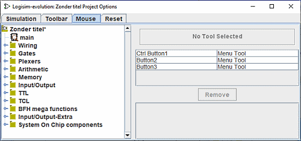
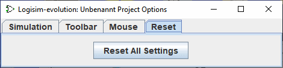

鼠标选项卡
默认情况下，当您在 Logisim 的绘图区域单击鼠标时，会使用当前选定的工具。如果您右键单击或按住 Ctrl 键单击，则会显示鼠标指针下方当前组件的弹出菜单。
您可以在 Logisim 中修改此行为，从而不必频繁回到工具栏或资源管理器。（如果您习惯左手操作鼠标，这也可能很方便。）鼠标按钮和修饰键（Shift、Ctrl 和 Alt 的任意子集）的每种组合都可以映射到不同的工具。鼠标选项卡用于配置这些映射。

-
左侧是一个资源管理器，您可以在其中选择要映射的工具。
-
右上角是一个矩形区域，您可以在其中用想要设置的鼠标组合单击。例如，如果您想通过按住 Shift 键拖动来创建新导线，应先在资源管理器中选择接线工具（位于基础库下）；然后在标有“使用组合单击以映射接线工具”的位置按住 Shift 键单击。如果该组合已被使用，原有映射会被替换为新工具。
-
此区域下方是当前映射的列表。请注意，任何未列出的组合将直接使用当前选定的工具。
-
再下面是删除按钮，可用于删除按钮上方表格中当前选定的映射。删除后，该鼠标组合会重新使用工具栏或资源管理器窗格中当前选定的工具。
-
最下方是映射列表中当前选定工具的属性列表。每个鼠标映射工具都有自己的一组属性，不同于资源管理器窗格和工具栏中使用的属性。您可以在此处编辑这些属性值。
重置选项卡

此选项卡很简单。使用重置所有设置按钮，可以将项目选项恢复为模板选项卡中配置的模板设置。
下一节： 用户指南。